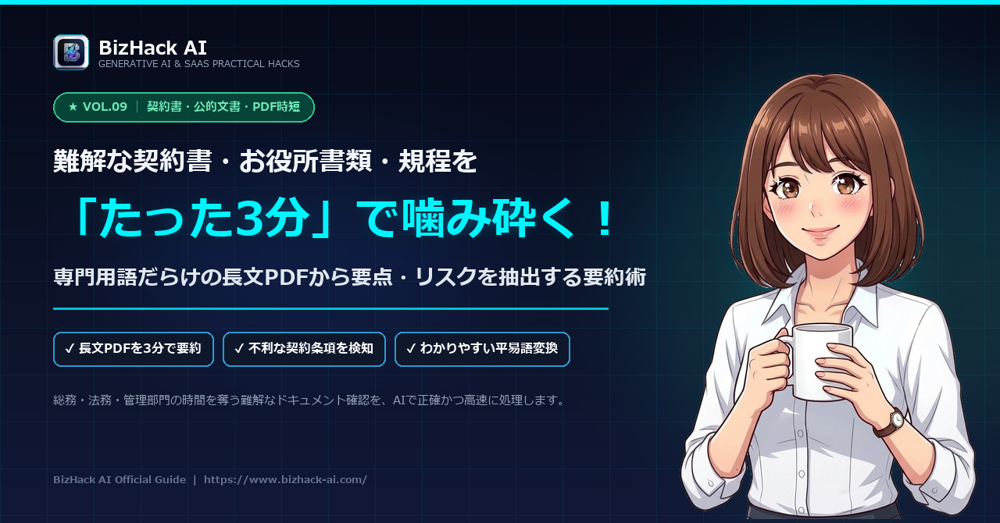

【文書・PDF時短】難解な契約書・公的書類・社内規程を3分で噛み砕く！ChatGPT文書添削＆要約術


⚡ 10秒お試し：まずはこのままコピペ！
以下の難解な公的文書（規程）を読み、専門用語を噛み砕いて「中学生でもわかる平易な日本語」で要点3つに箇条書き要約してください： [ここに難しい公的通知や規程の条文を貼り付け]
 栞のワンポイント：複雑な法律用語や公的通知も、日常会話レベルのわかりやすい日本語に瞬時に翻訳されます。
栞のワンポイント：複雑な法律用語や公的通知も、日常会話レベルのわかりやすい日本語に瞬時に翻訳されます。
📌 この記事で持ち帰れる3大成果
-
難解文書を3分で読破
お役所言葉・契約書条文の平易化要約術 -
リスク条項の自動洗い出し
契約書の禁止事項やペナルティを一発特定 -
社内周知メールの自動作成
規程変更のポイントをチームへ即座に共有